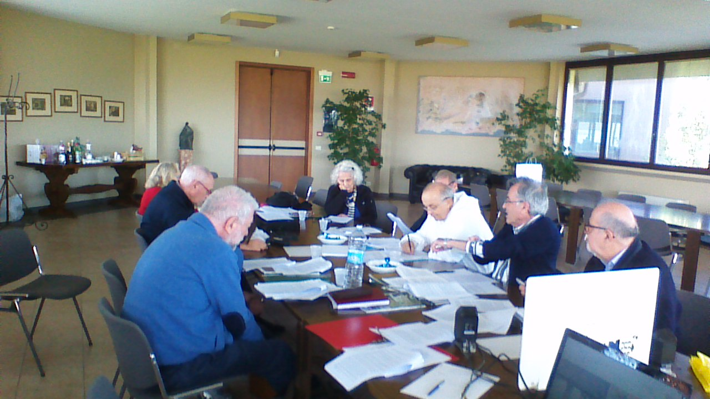

CONVEGNO
"SCIENZA E
METAFISICA" 2022
In
collaborazione con lo Studio Filosofico Domenicano di Bologna
e
l’Istituto Filosofico di Studi Tomistici di Modena
Scienza
e Metafisica - XXXX convegno
Villa
San
Giacomo
Ponticella
di San Lazzaro di Savena (BO)
30
settembre - 2
ottobre 2022
LA
COSCIENZA: CONSAPEVOLEZZA DI SÉ
INVITO
LEGGI
NB:
nel novembre 2022 il sito ha cambiato indirizzo, entrando nel sito
della Provincia Domenicana del Nord Italia. Per rispettare la storia e
non alterare i documenti precedenti, abbiamo lasciato le indicazioni
dell'indirizzo iniziale (www.csdricerca.com), che ora può essere non
esistente oppure usato da altri utenti.
CONTRIBUTI
Con il
convegno del 2021 abbiamo iniziato a stendere un documento sul tema
proposto,
da pubblicare una volta terminato. Nel convegno 2022 abbiamo continuato
a mettere a punto la bozza,
preparata dal prof. Roncoroni
La bozza è stata mandata a tutti insieme all'invito
al
convegno, con la
richiesta di
fornire modifiche, aggiunte e suggerimenti vari. Il dibattito è così
iniziato ancora prima del
convegno.
Inoltre
alcuni di noi hanno voluto inviare alcuni studi che potessero allargare
il punto di vista presentato al convegno del 2020.
Come
era prevedibile, la stesura di un documento condiviso dai partecipani
non poteva essere terminata nell'arco di un giorno e mezzo, nonostante
un ritmo di lavoro particolarmente faticoso.
Ci siamo quindi dati dei "compiti per casa",
assegnando le parti da completare: il lavoro è terminato a primavera
2023. Inoltre l'argomento è stato dibattuto anche negli Incontri
Interdisciplinari dell'anno sociale 2022-23, portando nuove
problematiche che hanno suggerito al prof. Roncoroni di modificare la
parte finale della sua bozza: quella sulla quale lavoreremo nel
convegno del 2023.
Vi diamo
quindi la bozza come è ora, insieme ad
alcuni contributi inviati per il convegno.
La bozza di
documento: LEGGI
Contributi:
Mario Di Febo:
Riflessioni sulla
teoria dei tre mondi di K. Popper
LEGGI
AA.VV.
Appunti dal dibattito dell'Incontro
Interdisciplinare del 20 giugno 2022, animato dalla prof. Rita
Casadio LEGGI
Massimo Roncoroni:
Appunti su Federico Faggin
LEGGI ;
egli inoltre invita tutti a leggere alcune pagine (pp. 40-47) di uno
studio su "Intelligenza artificiale e
intelligenza naturale" di un giovane studioso, Samuele Mongodi
Samuele Mongodi:
Mente
- cervello LEGGI
fra Sergio Parenti:
appunti sulla nostra cultura LEGGI
Gabriele Falciasecca:
risposta a Parenti: LEGGI
fra Sergio Parenti:
esempi per riflettere:
1) una traduzione letterale (analoga a quella che fa il computer, dalla
quale si può risalire al testo originale) e diverse traduzioni "a
senso", che suppongono l'aver compreso il significato: LEGGI
2) una dimostrazione logico-formale porta all'evidenza della
correttezza della conclusione, non della sua verità: LEGGI
3)
quindi calcolare non è dimostrare la verità LEGGI
4) un limite della dimostrazione "se... allora": il paradosso di
Hempel LEGGI
5) conoscere non è trasformare o essere trasformati LEGGI
PARTECIPANTI
P.
Giovanni Bertuzzi (filosofia,
teologia), Dott.
Maria Grazia Capella (scienze cognitive), Prof.
Rita Casadio
(bioinformatica), Prof.
Mario Di Febo (informatica, teologia), Prof. Gabriele Falciasecca
(elettronica, informatica), Ing. Fabio Frattini
(ingegneria nucleare), Prof. Jaime Julve Pérez (fisica), Prof. Antonio
Marino (matematica), P. Sergio
Parenti (teologia), Prof. Massimo Roncoroni (filosofia), Dott. Stefano
Rossi (filosofia).

|